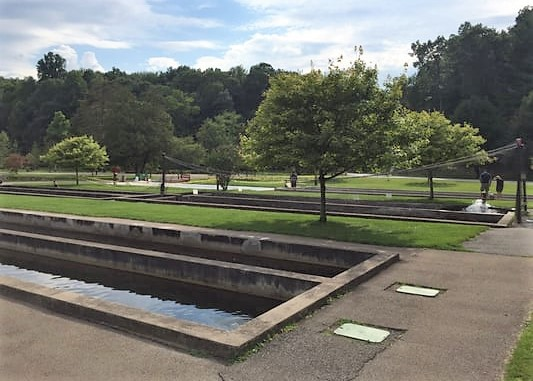

Things To Do
Fun Activities to Undertake!
Take a boat ride

Sam Patch takes you on a guided tour of one of the most famous canals in the United States. The two hour scenic tour can be used to get from Pittsord to other towns or relax in the Upstate NY sunshine. If you are lucky, you will see the Pittsford Crew Rowing Team practicing their strokes next to the boat. After the tour, make sure to feed the ducks along the canal with some duck food that you can purchase for $1 in the local stores. Watch Pittsford Crew on the water here.
Float down some rapids

Looking for something more high adrenaline? Check out the white water rafting course located right above Lock 32. Open during the summer months, the skilled employees will equipt you with all of the gear and teach you the basics. Great activity for hot weather!
Stroll through a park
Take in this historic nature park in the middle of town. After hiking the trails, stop by the Fish Hatchery to feed some huge carp that the park breeds for the local rivers. Watch as they jump out of the water fighting for the food pellets.
Listen to Live Music

Every Friday afternoon in the summer months, bands come together to play on the Erie Canal. Hear the tunes echo along the water, and enjoy the warm atmosphere.